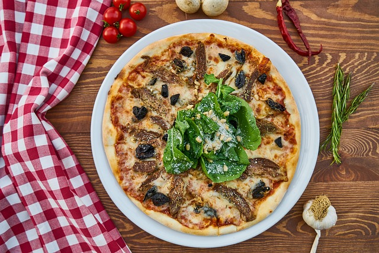
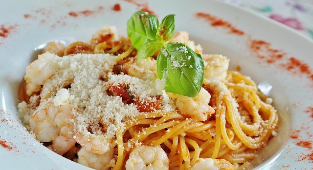
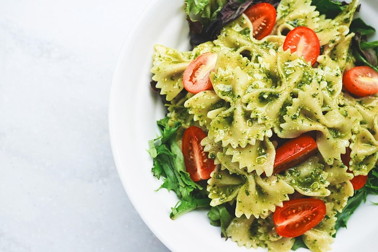
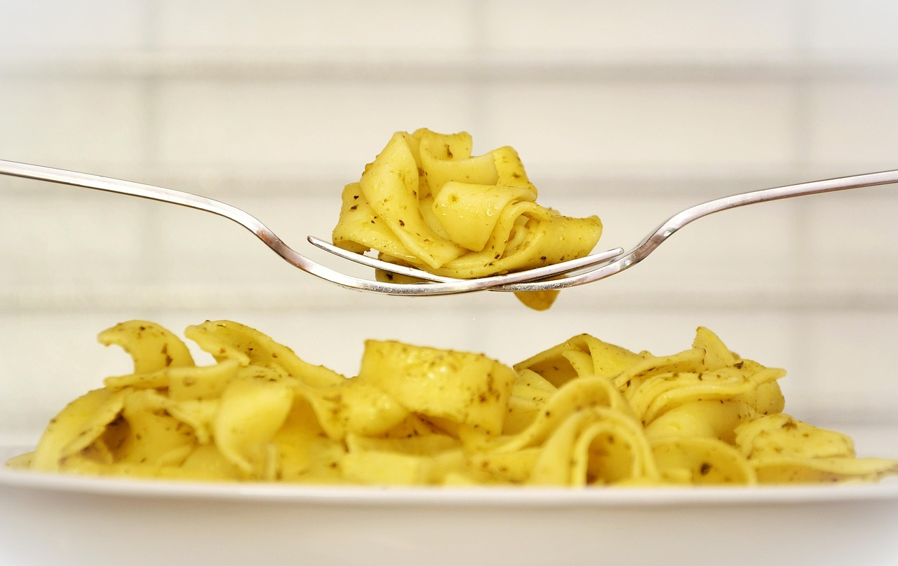

Cucina italiana
Una tavola ispirata alla tradizione italiana, da scoprire di persona.

Cucina italiana a pranzo e a cena, in una Spezia che si guadagna salendo per Via Costa di Santa Lucia.
A.S.D. Strà Marinasco è un ristorante di cucina italiana nel cuore di La Spezia. Un indirizzo pensato per chi cerca un pasto semplice e genuino, da condividere con chi si ama. Per conoscere proposte e disponibilità, il modo migliore è una telefonata.
Una tavola ispirata alla tradizione italiana, da scoprire di persona.
Aperto a mezzogiorno e la sera, per scegliere il momento che preferisci.
Un ambiente informale e accogliente, dove sentirsi a proprio agio.





Immagini illustrative, non del locale.

Chiama per informazioni, orari e disponibilità di un tavolo.